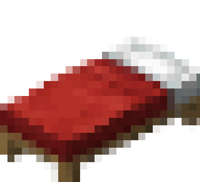
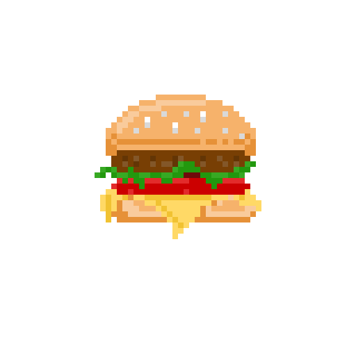
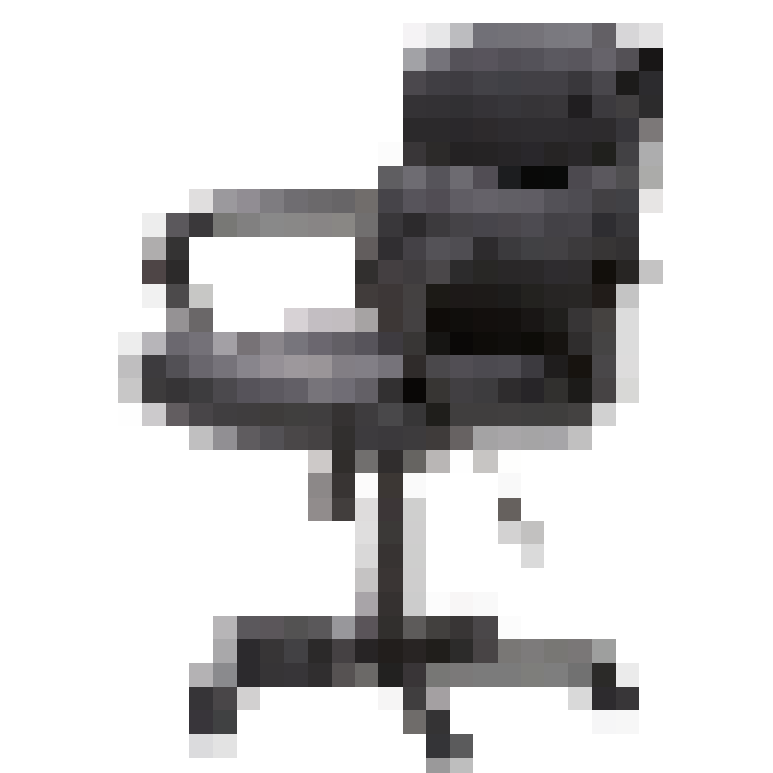
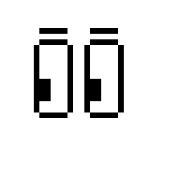

BedStats is a discord bot that retrieves player statistics from the popular minecraft gamemode "Hypixel Bedwars" and displays the information in a server.
Budget Bites is a website that helps users find affordable, fresh groceries nearby, showing prices, freshness, and distance. It also offers discounts and coupons on items nearing their sell-by dates, reducing food waste.
Motus is a specialized wheelchair controlled by the user's eye movements, allowing for hands-free navigation. It provides independence by eliminating the need for manual movement or assistance.
LookLock is a focusing tool that helps the user focus on the task in front of them for longer periods of time. The application tracks the person's eyes and reminds them with a beep if they are out of focus for over a minute.
